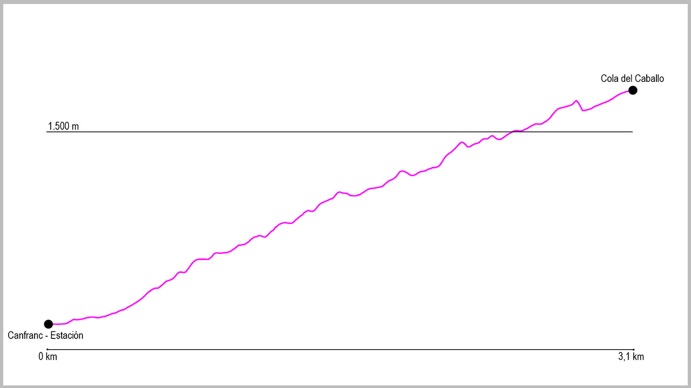

Desde el puente de la Estación de Canfranc, cruzaremos la carretera hacia la iglesia, y a su izquierda cogeremos un camino que sale al final de las escaleras de acceso a la misma. Nada más cogerlo llegaremos al paseo de Los Ayerbes, donde giraremos a la derecha para coger una primera rampa por pista bastante empinada. Justo al acabarla, descenderemos brevemente para en la bifurcación girar a nuestra izquierda en dirección a las piscinas municipales. Justo al llegar a ellas volveremos a girar a nuestra izquierda y en apenas 50 metros tomaremos ya el camino que nos llevará a nuestro destino.
Nada más empezar el camino tiene un cruce a nuestra derecha que obviaremos para seguir de forma ascendente. Este es un camino cómodo y fácil que casi en su totalidad transcurre por bosque; primero de coníferas y luego de frondosas.
A lo largo de la subida tendremos tres cruces que saldrán a nuestra izquierda para ver diferentes miradores (si decidimos visitar alguno de ellos tenemos que volver siempre al camino principal) y poco después de pasar la fuente del burro tenemos también una bifurcación a nuestra derecha, que tampoco haremos caso y seguiremos a nuestra izquierda. Estos serán los únicos cruces del recorrido.
El camino prosigue cómodamente hasta salir del bosque, donde continúa por una zona con alguna piedra hasta llegar, tras unas pocas curvas más, a nuestro destino: la Cola del Caballo.
